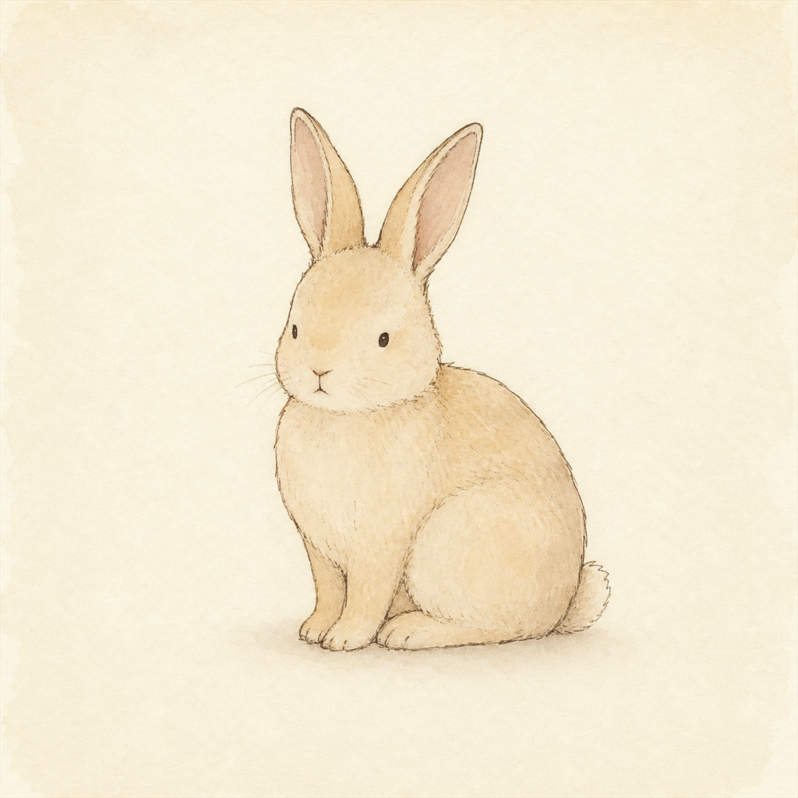
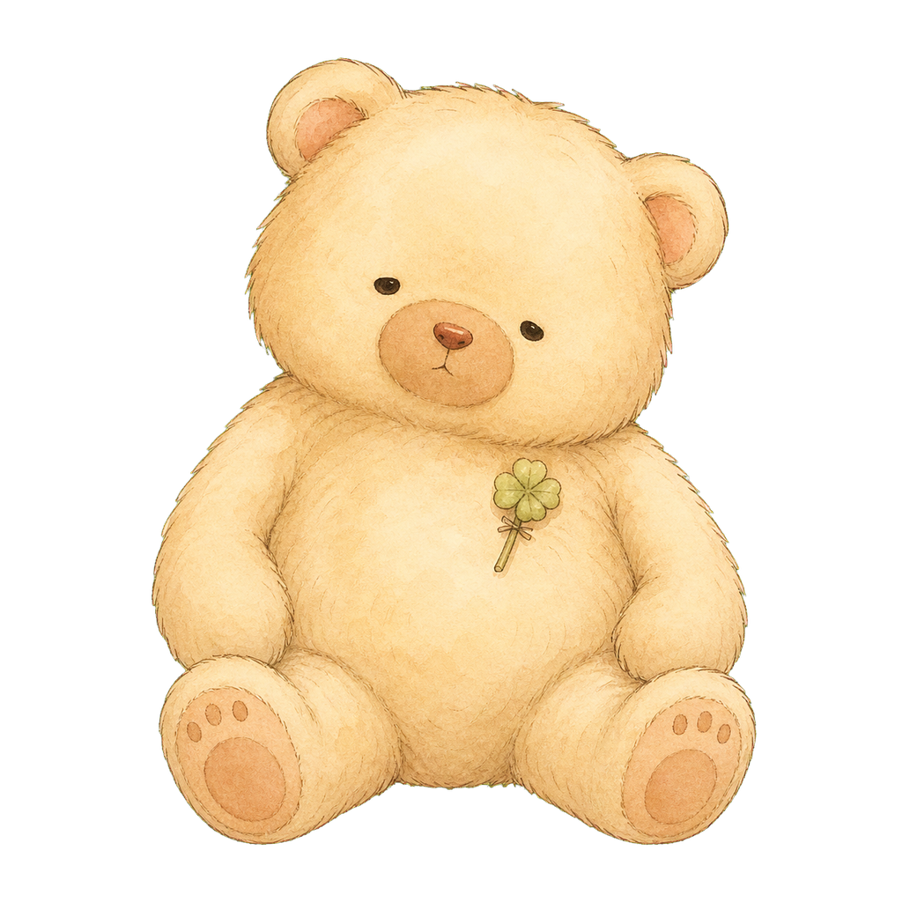
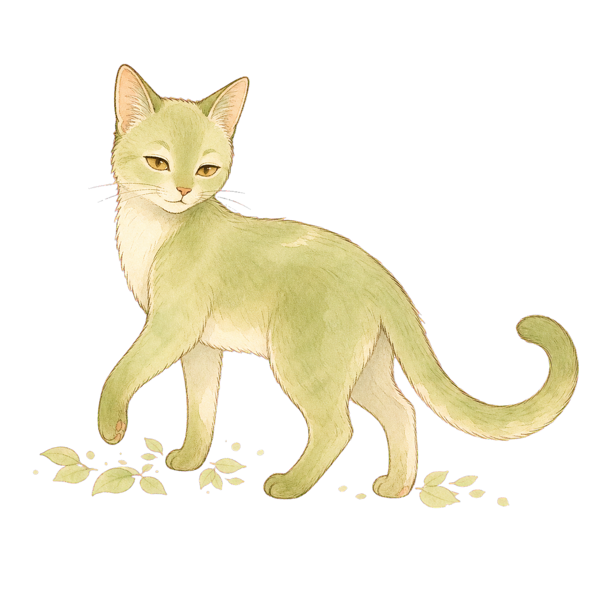

同じ病気を抱える人と、そっとつながれる場所。静的HTMLモックインデックス — 2026-05-16



このモックについて
2026-05-18(月) 20:00 の冨澤さんMTG用に作成。GRAVITYの「優しさを生む仕様」と「つながるハードルを下げる仕様」を医療版に翻訳して、ピーチ × 抹茶クリームの世界観に当てはめた静的HTMLモック。
各画面は単体で開けますが、ボトムナビ・カードのリンクから相互に行き来できます。実機サイズの幅を想定（max-width: 480px）。
設計の元ネタは以下：
画像生成プロンプトは ../prompts/ 配下。マスコット4種（もか／ぱお／そら／ふう）はCodexCLIで生成予定。
../prompts/